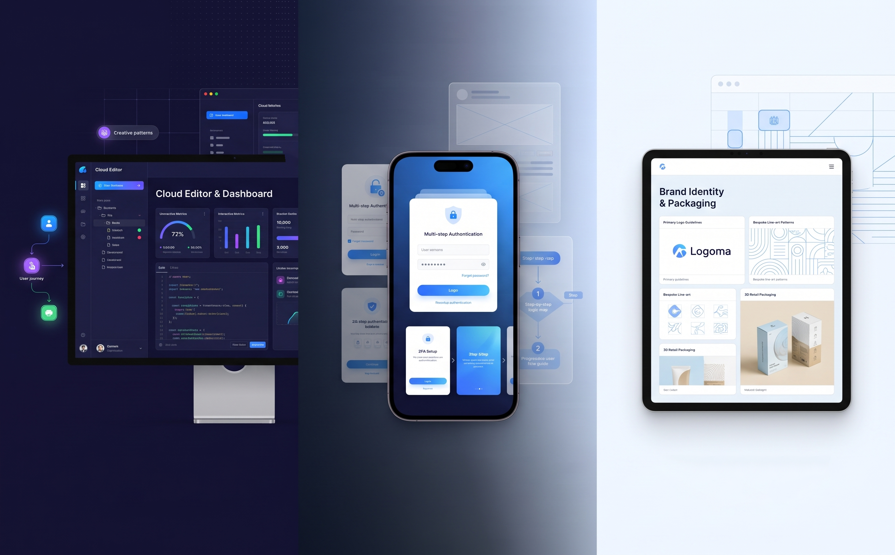

Designing digital products & scalable interfaces.
I’m Gagan M R — a UI/UX & Product Designer specializing in end-to-end web applications, modular Figma design systems, interactive prototyping, brand identity, custom iconography, and clean motion edits.

End-to-End
Wireframes to Dev Handoff
100%
Component & Edge-Case Coverage
Figma
Auto-Layout & Token Systems
UI QA
Pixel-Accurate Implementation Audits
Selected Works
Product architecture, scalable Figma systems, brand identity, custom icons, print posters, and motion graphics.
Inside My Product Design Architecture
How I structure complex web applications and cloud IDEs from raw user requirements to engineering-ready specs.
Cloud Code Editor & Multi-State IDE Ecosystem
01. Information Architecture
Designed clear separation between the project dashboard, file explorer trees, live preview split-panes, and version history drawers so users never lose context during heavy editing workflows.
02. Component & Token Logic
Engineered reusable Figma component variants using strict auto-layout rules, semantic color tokens, and responsive breakpoints covering default, hover, active, loading, and error states.
03. Security & UI QA Validation
Mapped critical authentication gateways—including 2FA setup, OTP verification, and session recovery—followed by hands-on manual QA passes to ensure zero visual regressions in production.
How I Design Products
Discovery & User Flows
Mapping user journeys, edge cases, and information architecture before drawing a single pixel.
Wireframing & Structure
Low- and high-fidelity layouts focused on hierarchy, scannability, and frictionless task completion.
Design Systems & Assets
Building tokenized variables, auto-layout components, custom icons, and cohesive brand visuals.
Prototyping, Motion & QA
Interactive validation, clean motion previews, developer specs, and hands-on UI QA passes.
What I Do
UI/UX & Design Systems
End-to-end wireframing, user flows, tokenized Figma component libraries, and interactive prototypes built for clean engineering handoff.
Brand, Logos & Custom Icons
Memorable logo systems, pixel-grid custom icon sets, marketing posters, menus, and cohesive retail packaging.
Motion Graphics & Video Edits
Clean UI micro-interactions, logo reveals, kinetic typography, and crisp promotional video cuts for product launches.
Systems thinking meets interface craft.
I’m Gagan M R, an independent UI/UX & Multidisciplinary Visual Designer based in Karnataka, India. I specialize in end-to-end product design, high- and low-fidelity wireframing, interactive prototyping, brand identity, custom iconography, and clean motion/video editing.
My approach combines structured auto-layout engineering in Figma with rigorous edge-case documentation—ensuring every screen and visual asset translates cleanly from design handoff to live production.
Lead UI/UX Product Designer
Architected complete web application ecosystems, cloud code editors, IDE dashboards, 2FA/OTP security gateways, and component libraries in Figma.
Brand, Icon & Print Designer
Delivered logo systems, custom vector icon libraries, editorial posters, hospitality menus, and retail packaging across digital and physical touchpoints.
Motion Visuals & Dev Handoff Specialist
Produced clean UI motion loops, logo reveals, and promotional video edits while partnering with engineering teams for pixel-accurate QA.
Have a project in mind?
I'm always open to discussing new projects, design systems, and creative opportunities. Let's create something amazing together!
Get In Touch